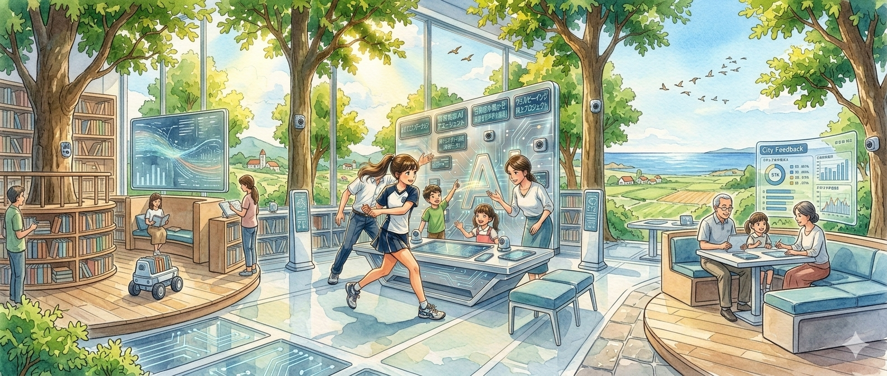
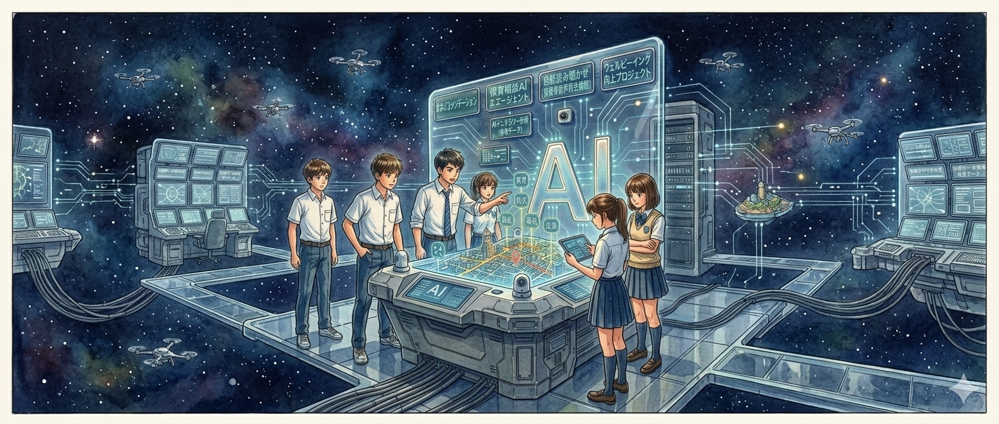
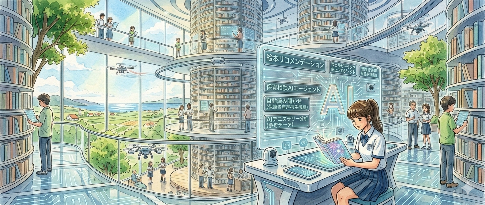

駅前公共施設について皆で考えよう
このプラットフォームについて
このプラットフォームは、駅前の公共施設について、みなさんの声を自由に投稿できる場所です。投稿された意見は、AIが公平に整理し、誰もが見える形にしていきます。
これまでの行政アンケートは、設問の立て方によって答えが左右されがちでした。意見を出しても、それがどう扱われたかも見えませんでした。このプラットフォームに設問はありません。自由に書いた声を、AIが公正な手法で整理し、誰もが確認できる形に残します。

特徴
- 思いついたまま、自由に書き込めます
- AIがあなたの声を読み取り、わかりやすく整理します
- 整理された意見は、ツリーの形で誰でも見られます
- どう整理されたか、その過程もすべて公開されます
- みんなの声が、少しずつ積み重なっていく仕組みです
投稿の流れ
自由に投稿する → AIが公平に整理する → ロジックツリーにまとまる → みんなで眺められる形になる
この仕組みの目的
どんな意見も、選んだり誘導したりせずに受け止めます。AIはただ公正なルールに沿って整理するだけ。あなたの声が、そのままの形でみんなの知恵になります。
他の市民の意見や提案を見てみましょう。投稿された意見はロジックツリー上で整理・統合されています。
🏛 政策提案ロジックツリー

このツリーは、大きなテーマから始まります。気になる分野を選ぶと、より詳しいテーマが下に開いていきます。
全体を眺めながら、気になるところだけ深掘りすることができます。
🤖 AI壁打ち

あなたの考えを聞かせてください
AIからの整理結果
結果はここに表示されます。（最大500文字）
200文字要約
推奨タイトル
📊 分析ルール

評価について
市民提案は、AIによって一定の基準で分類・構造化され、定量的に可視化されます。
価値向上
ベネフィット
交流
マルチユース
運営効率
ルール変更
ルールの変更は市民が提案し、その影響をAIが分析します。
AIの役割
AIは、人が定めたルールに従い、データとエビデンスに基づいて意見を整理・分析します。判断や選別は行わず、構造化と可視化のみを担います。
📋 PULL REQUEST

カテゴリー別の提案一覧
AI壁打ちから投稿された提案が、カテゴリー別に200字要約で一覧表示されます。
🔮 ビジョン変遷

初期ビジョン
公共施設を、費用のかかる場所としてではなく、市民の価値を生み出す場所として捉え直す。
次回ビジョン（検討中）
このエリアは今後、市民提案とAI分析によって更新されます。
・市民データ駆動型都市運営
・公共施設の収益モデル化
・AI共同意思決定プロセスの導入